|
Green LEDs illuminate the table top. Reflected light is
detected
by CDS photoconductive resistors. |
|
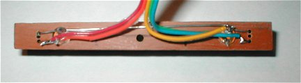 Line sensor from the back. Ribbon wire connects the LEDs and CDS cells |
|
Mini Sumo Robot |
| 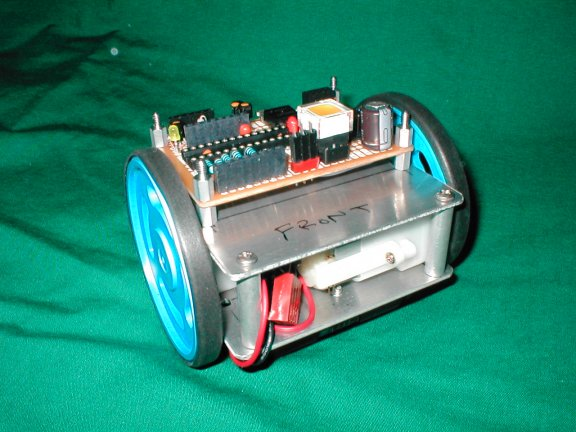 Body of the robot without the front
scoop. |
| 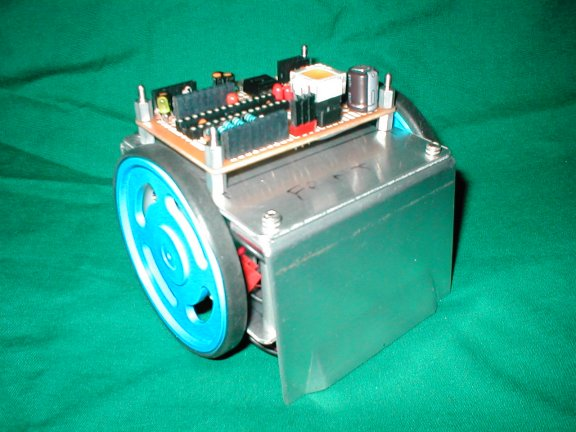 Front scoop attached |
| 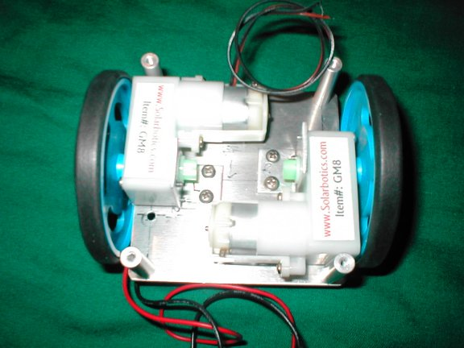 Two GM8 motors to drive the robot. |
| 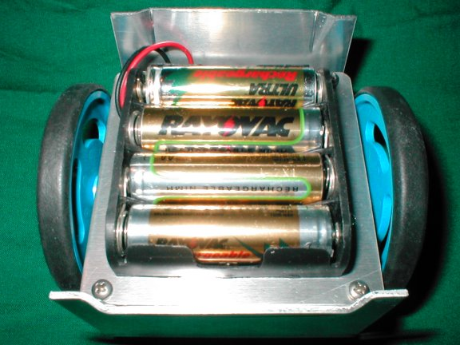 Batteries mounted on the bottom. 9V battery to be mounted on top |
| 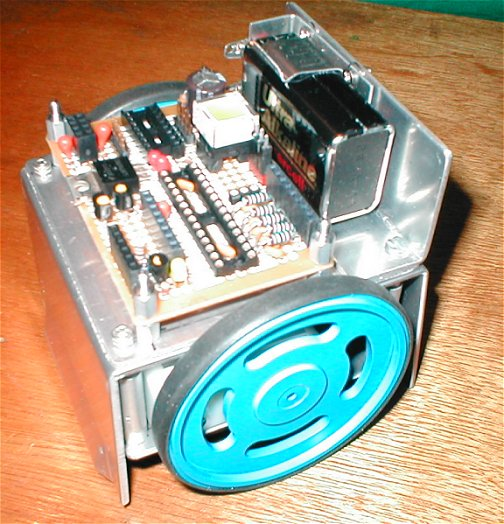 9 volt battery holder mounted on top, toward the front. |
|
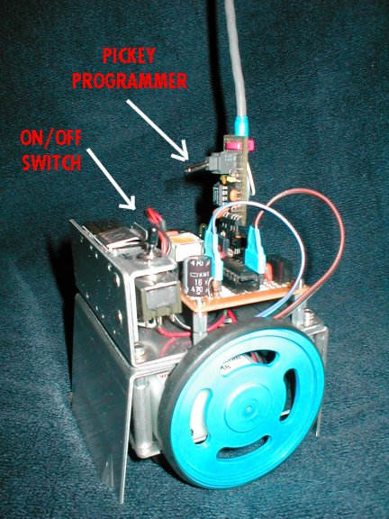 |
|
Green LEDs illuminate the table top. Reflected light is
detected
by CDS photoconductive resistors. |
|
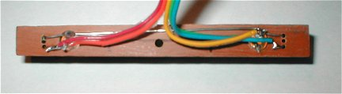 Line sensor from the back. Ribbon wire connects the LEDs and CDS cells |
| 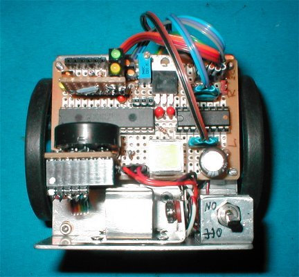 Top View Microcontroller is a PIC 16F876 20/SP from Microchip |
| 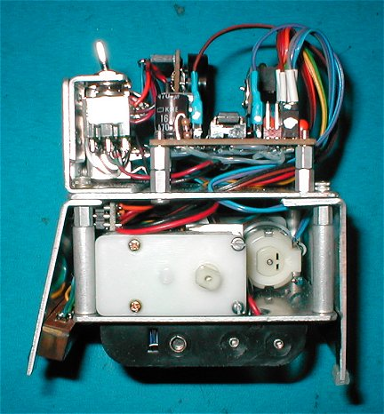 Side View |
| 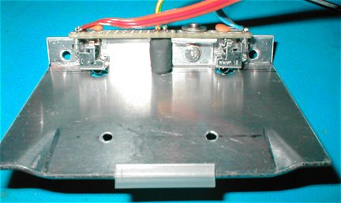 IR (EMF shielded) sensors mounted behind the front scoop |
| 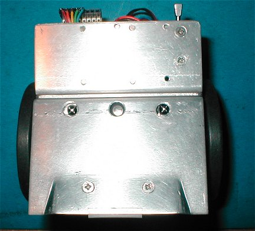 Front View of IR LED mounted in the center. IR object sensors to the right and left. |
| 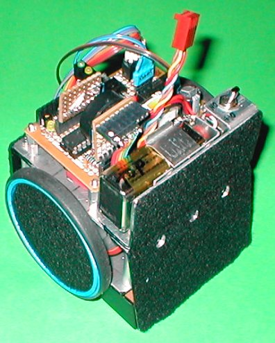 View showing black felt attached for stealthiness. |
|
Robot with special dual battery charger to the right.
|
| BillsBot2
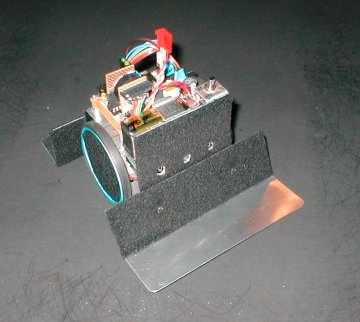 Add the extra wide scoops and it becomes "billsbot2" an entry for the 3kg Autonomous Sumo class.
|
|
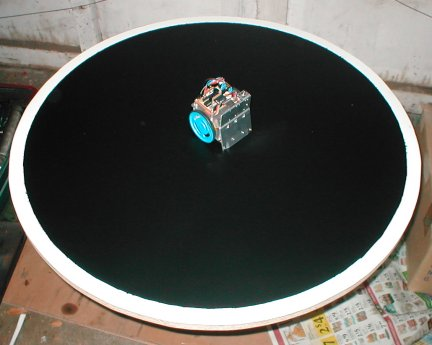 All by myself and no one to play with! |
| Program highlights and features:
1. Ability to calibrate for black surface and white line and
save values
in Data Rom. |
| Download the Pic Pro Basic program files here (updated
4-5-2004): Program into a Microchip PIC 16F876 20/SP Disclaimer: |
| Schematic Drawing of PIC Controller (PDF) updated 2-21-04 |
| |